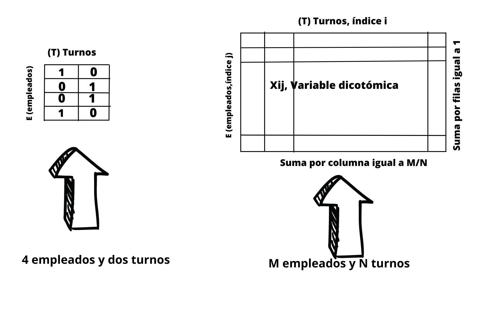

18. Introducción.#
Supongamos que tenemos un conjunto de M empleados y los tenemos que distribuir en N turnos de trabajo, y cada trabajador manifiesta su preferencia por un determinado turno ( en una escala de valoración que va del cero al N-1). Distribuir esos trabajadores en esos turnos y atendiendo a la preferencia del trabajador puede ser algo bastante tedioso a medida que se incrementa el número de trabajadores y el número de turnos a tener en cuenta. Este problema es el que se pretende resolver en este apartado, de tal manera que los trabajadores acudan a los turnos que se les asigne pero teniendo en cuenta sus preferencias.
Para resolver este problema utilizaremos un modelo de tipo DQM, aunque como se podrá apreciar durante el desarrollo del ejemplo, en el fondo va a ser un modelo BQM, con las variables \(x_{i,j}\) que toma valores 0 ó 1 y el subíndice i haciendo referencia al turno y el j al empleado j.
A continuación procedemos a desarrollar el problema y explicando en cada celda el procedimiento que se está utilizando. Comenzamos importando las librerías que vamos a necesitar.
from dimod import DiscreteQuadraticModel
from dwave.system import LeapHybridDQMSampler
import numpy as np
import matplotlib
matplotlib.use("agg")
import matplotlib.pyplot as plt
Comenzamos definiendo las variables que se van a utilizar en el problema. El valor de estas variables se puede modificar como el lector crea conveniente, pero siempre respetanto la restricción de que el número de empleados (M) tiene que ser mayor o igual que el número de turnos (N).
# Definimos el número de empleados
num_employees = 12
# Definimos el número de turnos
num_shifts = 4
# El número de empleados debe ser mayor o igual que el de turnos
if num_employees < num_shifts:
print("\n**Número de empleados debe ser mayor o igual que el número de turnos.**")
print("\nPlanificando", num_employees, "empleados sobre", num_shifts, "turnos...\n")
Planificando 12 empleados sobre 4 turnos...
Procedemos a generar de forma aleatoria las preferencias en los turnos de cada empleado, de tal manera que cuanto menor valor mayor preferencia se tendra por el turno indicado por la posición en la que se encuentra la preferencia manifestada. De esta manera si un trabajador manifiesta las siguientes preferencias [1,3,2,0] significara que en primer lugar prefiere el cuarto turno, después sería el primer turno y así sucesivamente.
Se toma este tipo de codificación para las preferencia, ya que los valores así indicados serán los coeficientes (bias) que acompañan a las variables en la parte lineal del problema, y como los solvers lo que hacen es minimizar la energia, son estos valores los mejores a utilizar como bias en la parte lineal del problema.
Procedemos por lo tanto a generar estas preferencias, y después de su generación procedemos a mostrar el resultado obtenido.
# Generamos de forma aleatoria un array con las preferencias de turnos de los empleados.
# A menor valor mayor preferencia por ese turno
preferences = np.tile(np.arange(num_shifts), (num_employees, 1))
rows = np.indices((num_employees,num_shifts))[0]
cols = [np.random.permutation(num_shifts) for _ in range(num_employees)]
preferences = preferences[rows, cols]
preferences
array([[3, 2, 1, 0],
[3, 0, 2, 1],
[0, 1, 3, 2],
[2, 3, 0, 1],
[0, 3, 2, 1],
[1, 2, 0, 3],
[2, 0, 1, 3],
[3, 1, 2, 0],
[1, 2, 3, 0],
[2, 3, 0, 1],
[0, 2, 1, 3],
[1, 0, 3, 2]])
Una vez hechos todos estos preparativos inciales, procedemos a implementar el código que resolverá nuestro problema y para ello, lo primero que hacemos es generar una instancia de la clase DiscreteQuadraticModel
# Inicializamos un modelo de tipo DQM
dqm = DiscreteQuadraticModel()
A continuación pasamos a explicar todos los condionantes que tengamos en cuenta para la generación de nuestro modelo. Un primer condicionante es que el número de trabajadores por turnos deberá ser aproximadamente el mismo, es decir, deberemos hacer una distribución uniforme de los trabajadores por cada turno, en consecuencia en cada turno habrá M/N=num_employees/num_shifts trabajadores. Esta será una condición a tener en cuenta en nuestro problema.
En la siguiente figura podemos ver de forma clara cuales son las condiciones a tener en cuenta.

Una condición es que la suma por filas debe ser igual a 1, es decir un trabajador debe ser asignado a uno y sólo un turno. Esta restricción la vamos a tener porque vamos a definir una variable de tipo discreta para cada trabajador y entonces el sistema ya va a saber que la suma debe ser igual a uno.
Otro condicionante muy importante es que la suma por columnas debe ser igual a num_employees/num_shift=M/N. Como ya sabemos por la parte teórica, esta restricción se consigue añadiendo mediante una suma el factor \(\left(\sum_{j}x_{ij}-M/N\right)^{2}\) multiplicado por el factor de Lagrange \(\gamma\), y esto para cada turno i. Desarrollamos a continuación ese término al cuadrado.
Ahora hay que tener en cuenta que las variables con las que trabajamos son binarias, con valores igual a cero o uno, por lo tanto \(x_{ij}^2=x_{ij}\), y en consecuencia la expresión anterior queda de la siguiente forma:
Como estamos minimizando el término constante \((M/N)^2\) nos podemos olvidar de él. Y no olvidemos que los términos anteriores deben estar multiplicados por la contante de Lagrange gamma. Teniendo en cuenta todo lo anterior procedemos a construir el modelo. Lo primero que debemos hacer es crear las variables discreteas, una para cada empleado:
# Para cada empleado añadimos una variable discreta al modelo DQM
for name in range(num_employees):
dqm.add_variable(num_shifts, label=name)
Al crear para cada empleado las variables de esta manera, tenemos granatizado que:
El número de valores es num_shifts que es el primero parámetro del método add_variable.
Al convertir estas variables en otras de tipo one-hot encoding (variables binarias), la suma para cada empleado es 1
Procedemos ahora a incorporar la condición que hemos visto anteriormente, de que la suma por columnas debe ser igual a M/N.
Primero definimos el valor del parámetro de Lagrange gamma y establecemos el valor de M/N.
# Debe haber igual número empleados en cada turnos
num_per_shift = int(num_employees/num_shifts)
# Parámetro de Lagrange gamma
gamma = num_employees
Procedemos ahora a establecer la condición de que la suma por columnas es M/N
for i in range(num_shifts):
for j in range(num_employees):
dqm.set_linear_case(j, i, preferences[j, i] - gamma*(2*num_per_shift-1))
for k in range(j+1, num_employees):
dqm.set_quadratic_case(j, i, k, i, gamma*2)
Ahora ya resolvemos mediante un solver híbrido
# Inicializamos el DQM solver
sampler = LeapHybridDQMSampler()
# Resolvemos el problema utilizando el DQM solver
sampleset = sampler.sample_dqm(dqm, label='Ejemplo - Employee Scheduling')
# Nos quedamos con la primera solución
sample = sampleset.first.sample
energy = sampleset.first.energy
print("\nhorario score:", energy)
horario score: -432.0
Una vez se tenga la solución la construcción y visualización del horario ya es inmediata
# Construimos el horario
schedule = np.ones((num_employees, num_shifts))*num_shifts
prefs = [0]*num_shifts
shifts = [0]*num_shifts
for key, val in sample.items():
schedule[key,val]=preferences[key,val]
prefs[preferences[key,val]] += 1
shifts[val] += 1
Para evitar el warning UserWarning: Matplotlib is currently using agg, which is a non-GUI backend, so cannot show the figure al ejecutar los comandos que siguen, es necesario previamente instalar TKinter, lo hacemos con el siguiente código que se deja comentado, si ya se tuviera instalado es módulo.
#pip install tk
# mostramos las preferencias mediante un mapa de calor
cmap = plt.get_cmap('seismic')
cmaplist = [cmap(i) for i in range(cmap.N)]
cmaplist[-1] = (1.0,1.0,1.0,1.0)
cmap = cmap.from_list('Custom cmap', cmaplist, cmap.N)
fig, (ax1, ax2) = plt.subplots(1, 2)
ax1.imshow(preferences, cmap='seismic', interpolation='nearest', vmin=0, vmax=num_shifts, aspect='auto')
ax1.xlabel = 'Shifts'
ax1.ylabel = 'Employees'
ax1.set_title("Employee Shift Preferences", color='Black', fontstyle='italic')
# Show heatmap of schedule
cax = ax2.imshow(schedule, cmap=cmap, interpolation='nearest', aspect='auto', vmin=0)
cbar = fig.colorbar(cax, ticks=[0, num_shifts])
cbar.set_ticklabels(['Best', 'Worst'])
ax2.xlabel = 'Shifts'
ax2.set_title("Employee Shift Schedule", color='Black', fontstyle='italic')
plt.savefig("employee_schedule.png")
# Compute/display schedule statistics
plt.clf()
plt.subplot(1, 2, 1)
plt.bar(np.arange(num_shifts), shifts)
plt.xlabel("Shift")
plt.ylabel("Number Scheduled")
plt.title("Employees Scheduled Per Shift")
mean_happiness = sum([i*prefs[i] for i in range(num_shifts)])/num_employees
print("\nAverage happiness:\t", mean_happiness)
plt.subplot(1, 2, 2)
plt.bar(np.arange(num_shifts), prefs)
plt.xlabel("Preference Rank")
plt.title("Average Preference per Shift")
#plt.savefig("schedule_statistics.png")
plt.show()
Average happiness: 0.0
C:\Users\Francisco\AppData\Local\Temp\ipykernel_13396\2811326044.py:37: UserWarning: Matplotlib is currently using agg, which is a non-GUI backend, so cannot show the figure.
plt.show()
Para finalizar la exposición de este ejemplo, simplemente volver a decir que este problema se podría haber resuelto utilizando un modelo de tipo CQM, lo cual se deja como ejercicio al lector para que de esta manera vaya adquiriendo la destreza necesaria en la utilización de Ocena SDK.